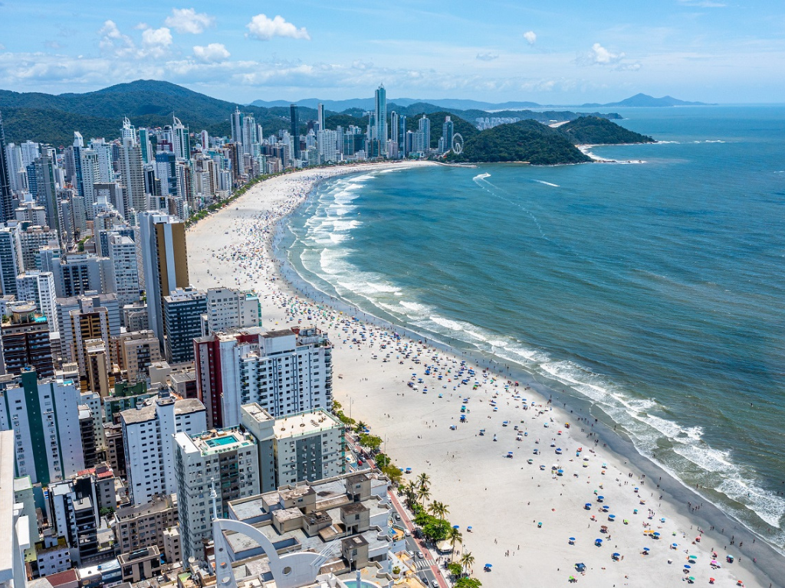

Santa Catarina, localizado na região Sul do Brasil, é um estado fascinante conhecido por sua diversidade geográfica e alto padrão de vida, figurando como um dos melhores lugares para se viver no país. Com uma capital vibrante, Florianópolis, e a maior cidade sendo Joinville, o estado é um forte polo econômico e turístico, destacando-se pela marcante colonização europeia — com forte influência alemã e italiana —, belas praias no litoral e invernos rigorosos com possibilidade de neve na serra. Conhecido por ser um estado acolhedor, seguro e com economia diversificada, Santa Catarina oferece um cenário que combina montanhas, cachoeiras e um litoral paradisíaco.
